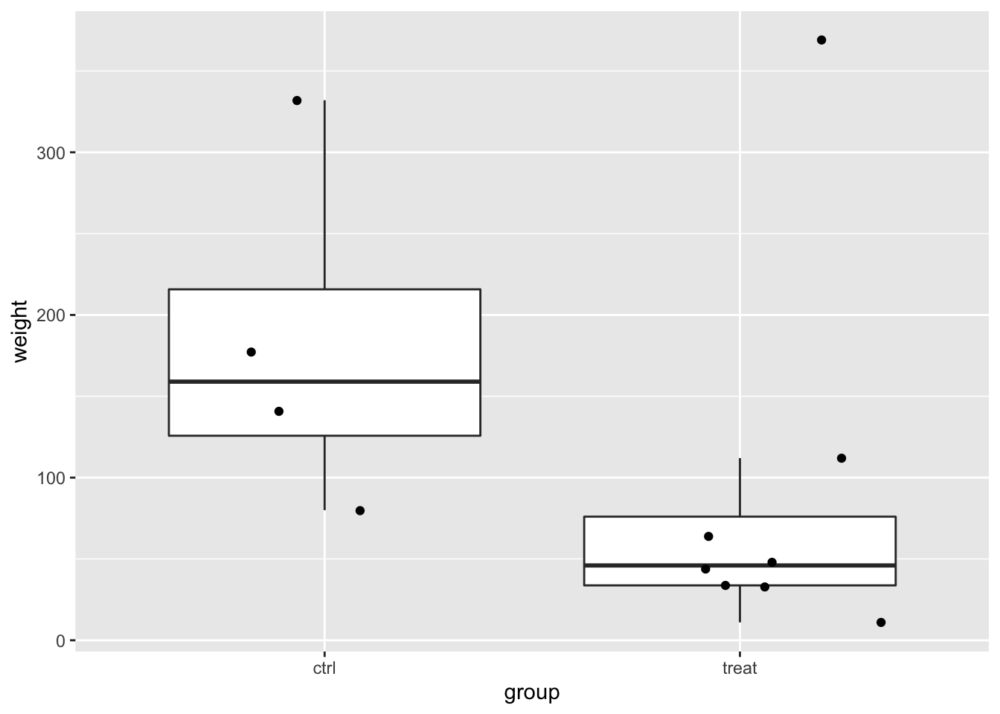
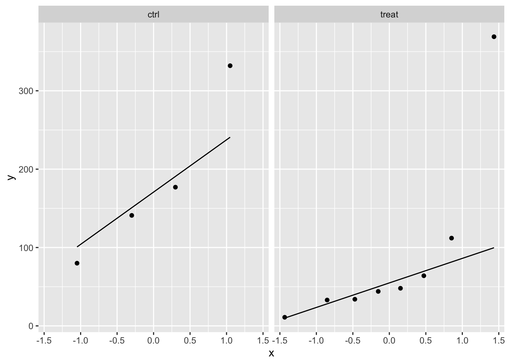
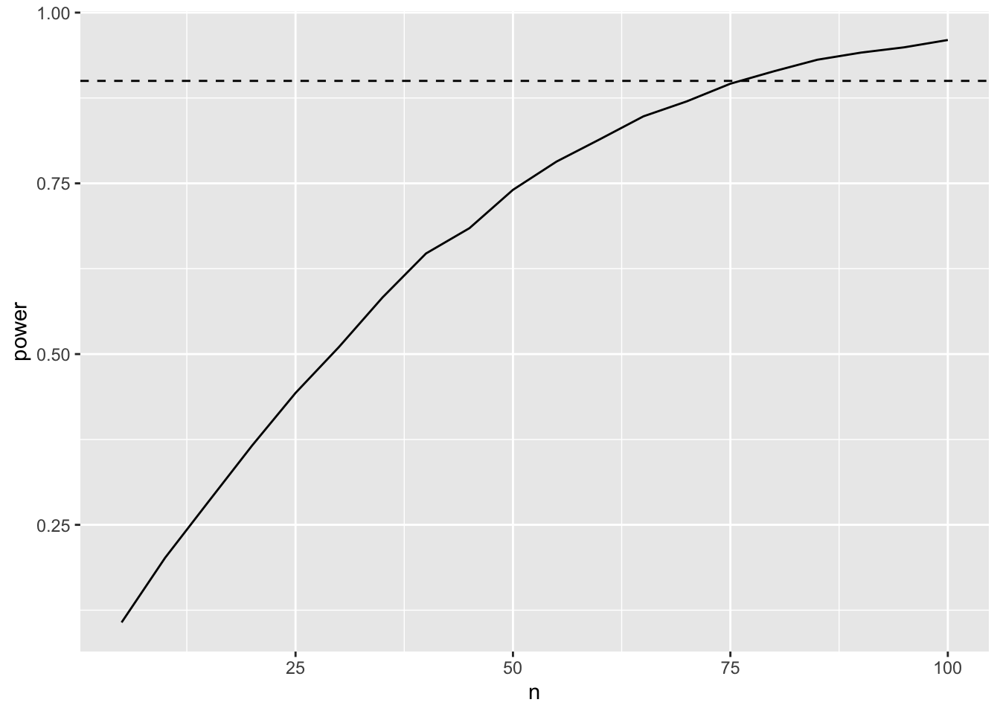

## ── Attaching packages ─────────────────────────────────────── tidyverse 1.3.1 ──
## ✔ ggplot2 3.3.5 ✔ purrr 0.3.4
## ✔ tibble 3.1.4 ✔ dplyr 1.0.7
## ✔ tidyr 1.1.4 ✔ stringr 1.4.0
## ✔ readr 2.0.2 ✔ forcats 0.5.1
## ── Conflicts ────────────────────────────────────────── tidyverse_conflicts() ──
## ✖ dplyr::filter() masks stats::filter()
## ✖ dplyr::lag() masks stats::lag()
Power
The power of a test is defined as:
\[P(p <
\alpha | H_1)\] This is the probability to reject the nulhypothesis at the significance level \(\alpha\) given that the alternative hypothesis is true.
The power depends on:
- the real effect size in the population \(\mathbf{L}^T\boldsymbol{\beta}\).
- the number of observations: SE and df.
- Choice of designpoints
- Choice of significance-level \(\alpha\).
We will evaluate the power using simulation.
Rodents
A biologist examined the effect of a fungal infection on the eating behavior of rodents. Infected apples were offered to a group of eight rodents, and sterile apples were offered to a group of 4 rodents. The amount of grams of apples consumed per kg body weight are given in the dataset below.
rodents <- data.frame(weight=c(11,33,48,34,112,369,64,44,177,80,141,332),group=as.factor(c(rep("treat",8),rep("ctrl",4))))
rodents
Data exploratie
rodents %>%
ggplot(aes(x=group,y=weight)) +
geom_boxplot(outlier.shape = NA) +
geom_jitter()

rodents %>%
ggplot(aes(sample = weight)) +
geom_qq() +
geom_qq_line() +
facet_wrap(~ group)

In the data exploration we do not have enough data to evaluate the assumptions.
Suppose that the assumptions are valid and that standard deviation in the population would be equal to the ones you observed in the experiment.
- What is the power of the experiment if the effect size and standard deviation in the population would be equal to the ones you observed in the experiment
- What would the power by if number of rodents would balanced in both groups
- How many observations would you need to pick up the treatment effect with a power of 80%?
- How many observations would you need to pick up the treatment effect of 60 g/kg with a power of 80%?
Analyse of the data
We will model the data using a linear model with one dummy variable.
\[
y_i = \beta_0 + \beta_1 x_{t,i} +
\epsilon_i
\] with \(x_{p,i} = 0\) if the rodent is subjected the control treatment with sterile apples and \(x_{t,i} = 1\) if rodent receives the treatment with infected apples.
The average difference in relative abundance of Staphylococcus of patients of the transplant and the placebo group.
\[
\hat \beta_1 = \bar y_t - \bar y_c
\]
- \(H_0\): rodents eat consume on average the same amount of apples per kg body weight when they are fed with sterile or with infected apples.
- \(H_1\): the average amount of apples in g/kg body weight is different when rodents are fed with sterile then as when they are fed with infected apples.
lm1 <- lm(weight ~ group, rodents)
summary(lm1)
##
## Call:
## lm(formula = weight ~ group, data = rodents)
##
## Residuals:
## Min 1Q Median 3Q Max
## -102.500 -55.625 -41.438 1.531 279.625
##
## Coefficients:
## Estimate Std. Error t value Pr(>|t|)
## (Intercept) 182.50 57.03 3.200 0.00949 **
## grouptreat -93.12 69.85 -1.333 0.21204
## ---
## Signif. codes: 0 '***' 0.001 '**' 0.01 '*' 0.05 '.' 0.1 ' ' 1
##
## Residual standard error: 114.1 on 10 degrees of freedom
## Multiple R-squared: 0.1509, Adjusted R-squared: 0.06601
## F-statistic: 1.777 on 1 and 10 DF, p-value: 0.212
With the current study and under when we assume that the assumptions of the model hold, we conclude that the amount of apples that rodents on average consume does not differ significantly between the group that was fed with sterile apples and the group that was fed with infected apples.
Power of the test to detect the same effect size as observed in our dataset with our experimental design?
Simulation function
Function to simulate data similar to that of our experiment under our model assumptions.
simFast <- function(form, data, betas, sd, contrasts, alpha = .05, nSim = 10000)
{
ySim <- rnorm(nrow(data)*nSim,sd=sd)
dim(ySim) <-c(nrow(data),nSim)
design <- model.matrix(form, data)
ySim <- ySim + c(design %*%betas)
ySim <- t(ySim)
### Fitting
fitAll <- limma::lmFit(ySim,design)
### Inference
varUnscaled <- c(t(contrasts)%*%fitAll$cov.coefficients%*%contrasts)
contrasts <- fitAll$coefficients %*%contrasts
seContrasts <- varUnscaled^.5*fitAll$sigma
tstats <- contrasts/seContrasts
pvals <- pt(abs(tstats),fitAll$df.residual,lower.tail = FALSE)*2
return(mean(pvals < alpha))
}
Simulation
betas <- lm1$coefficients
nSim <- 10000
form <- ~ group
sd <- sigma(lm1)
contrast <- limma::makeContrasts("grouptreat",levels = names(lm1$coefficients))
## Warning in limma::makeContrasts("grouptreat", levels = names(lm1$coefficients)):
## Renaming (Intercept) to Intercept
alpha <- 0.05
power <- simFast(form, rodents, betas, sd, contrasts = contrast, alpha = alpha, nSim = nSim)
power
## [1] 0.2204
We observe that the experiment is severly underpowered. We only have a power of 22% to pick up the treatment effect.
Power for a balanced design
betas <- lm1$coefficients
nSim <- 10000
form <- ~ group
sd <- sigma(lm1)
contrast <- limma::makeContrasts("grouptreat",levels = names(lm1$coefficients))
## Warning in limma::makeContrasts("grouptreat", levels = names(lm1$coefficients)):
## Renaming (Intercept) to Intercept
n1 <- n2 <- nrow(rodents)/2
predictorData <- data.frame(group = rep(c("ctrl","treat"),c(n1,n2)) %>% as.factor)
powerBalanced <- simFast(form, predictorData, betas, sd, contrasts = contrast, alpha = alpha, nSim = nSim)
powerBalanced
## [1] 0.2539
We observe that the power is larger for the balanced design. We could also have known this from formula of the standard error from the two-sample t-test.
\[
SE = \hat \sigma \sqrt{1/n1 + 1/n2}
\] Indeed,
sqrt(1/sum(rodents$group=="treat") + 1/sum(rodents$group=="ctrl"))
## [1] 0.6123724
## [1] 0.5773503
So the SE is larger when the design is not balanced.
Required sample size to obtain a power of 90 %?
set.seed(1400)
betas <- lm1$coefficients
nSim <- 10000
form <- ~ group
sd <- sigma(lm1)
power <- data.frame(n=seq(5,50,5),power=NA)
alpha <- 0.05
contrast <- limma::makeContrasts("grouptreat",levels = names(lm1$coefficients))
## Warning in limma::makeContrasts("grouptreat", levels = names(lm1$coefficients)):
## Renaming (Intercept) to Intercept
for (i in 1:nrow(power))
{
n1 <- n2 <- power$n[i]
predictorData <- data.frame(group = rep(c("ctrl","treat"),c(n1,n2)) %>% as.factor)
power$power[i] <- simFast(form, predictorData, betas, sd, contrasts = contrast, alpha = alpha, nSim = nSim)
}
power
power %>%
ggplot(aes(x=n,y=power)) +
geom_line()

Through simulations we show that we need about 32-33 observations to obtain a power of about 90%.
This is similar to what we would obtain with the close form formula that can be applied for a two group design
power.t.test(delta = lm1$coef[2], sd = sigma(lm1),power=.9)
##
## Two-sample t test power calculation
##
## n = 32.52035
## delta = 93.125
## sd = 114.067
## sig.level = 0.05
## power = 0.9
## alternative = two.sided
##
## NOTE: n is number in *each* group
Impact of effect size
Suppose that we would like to pick up an effect size of \(\beta_1 = 60 g/kg\). how many samples would be required in each group to obtain a power of 90%? Note, that
- we do a two-sided test so the sign of the effect size is arbitrary.
- the intercept in the power analysis is also arbitrary so we could also set it at 0.
set.seed(1400)
betas <- c(0,60)
nSim <- 10000
form <- ~ group
sd <- sigma(lm1)
power2 <- data.frame(n=seq(5,100,5),power=NA)
alpha <- 0.05
contrast <- limma::makeContrasts("grouptreat",levels = names(lm1$coefficients))
## Warning in limma::makeContrasts("grouptreat", levels = names(lm1$coefficients)):
## Renaming (Intercept) to Intercept
for (i in 1:nrow(power2))
{
n1 <- n2 <- power2$n[i]
predictorData <- data.frame(group = rep(c("ctrl","treat"),c(n1,n2)) %>% as.factor)
power2$power[i] <- simFast(form, predictorData, betas, sd, contrasts = contrast, alpha = alpha, nSim = nSim)
}
power2
power2 %>%
ggplot(aes(x=n,y=power)) +
geom_line() +
geom_hline(yintercept = .9, lty=2)

We observe that we need between 75-80 observations to obtain a power of 90%.
This is confirmed with the power functions for the two sample t-test.
b1 = - 60
power = .9
power.t.test(d = b1, sd = sigma(lm1), type='two.sample',power = power)
##
## Two-sample t test power calculation
##
## n = 76.926
## delta = 60
## sd = 114.067
## sig.level = 0.05
## power = 0.9
## alternative = two.sided
##
## NOTE: n is number in *each* group
Note, that we would require a much larger sample size. This is because the desired effect size that we would like to pick up is smal compared to the variability (standard deviation) in the population.
LS0tCnRpdGxlOiAiRXhwZXJpbWVudGFsIERlc2lnbiBJSTogcmVwbGljYXRpb24gYW5kIHBvd2VyIGV4ZXJjaXNlIDEiCmF1dGhvcjogIkxpZXZlbiBDbGVtZW50ICYgQWxleGFuZHJlIFNlZ2VycyIKZGF0ZTogInN0YXRPbWljcywgR2hlbnQgVW5pdmVyc2l0eSAoaHR0cHM6Ly9zdGF0b21pY3MuZ2l0aHViLmlvKSIKb3V0cHV0OgogIGh0bWxfZG9jdW1lbnQ6CiAgICBjb2RlX2Rvd25sb2FkOiB5ZXMKICAgIHRoZW1lOiBjb3NtbwogICAgdG9jOiB5ZXMKICAgIHRvY19mbG9hdDogeWVzCiAgICBoaWdobGlnaHQ6IHRhbmdvCiAgICBudW1iZXJfc2VjdGlvbnM6IHllcwotLS0KCgo8YSByZWw9ImxpY2Vuc2UiIGhyZWY9Imh0dHBzOi8vY3JlYXRpdmVjb21tb25zLm9yZy9saWNlbnNlcy9ieS1uYy1zYS80LjAiPjxpbWcgYWx0PSJDcmVhdGl2ZSBDb21tb25zIExpY2Vuc2UiIHN0eWxlPSJib3JkZXItd2lkdGg6MCIgc3JjPSJodHRwczovL2kuY3JlYXRpdmVjb21tb25zLm9yZy9sL2J5LW5jLXNhLzQuMC84OHgzMS5wbmciIC8+PC9hPgoKYGBge3J9CmxpYnJhcnkodGlkeXZlcnNlKQpgYGAKCiMgUG93ZXIKClRoZSBwb3dlciBvZiBhIHRlc3QgaXMgZGVmaW5lZCBhczoKCiQkUChwIDwgClxhbHBoYSB8IEhfMSkkJApUaGlzIGlzIHRoZSBwcm9iYWJpbGl0eSB0byByZWplY3QgdGhlIG51bGh5cG90aGVzaXMgYXQgdGhlIHNpZ25pZmljYW5jZSBsZXZlbCAkXGFscGhhJCBnaXZlbiB0aGF0IHRoZSBhbHRlcm5hdGl2ZSBoeXBvdGhlc2lzIGlzIHRydWUuIAoKVGhlIHBvd2VyIGRlcGVuZHMgb246CgotIHRoZSByZWFsIGVmZmVjdCBzaXplIGluIHRoZSBwb3B1bGF0aW9uICRcbWF0aGJme0x9XlRcYm9sZHN5bWJvbHtcYmV0YX0kLgotIHRoZSBudW1iZXIgb2Ygb2JzZXJ2YXRpb25zOiBTRSBhbmQgZGYuCi0gQ2hvaWNlIG9mIGRlc2lnbnBvaW50cyAKLSBDaG9pY2Ugb2Ygc2lnbmlmaWNhbmNlLWxldmVsICRcYWxwaGEkLiAKCldlIHdpbGwgZXZhbHVhdGUgdGhlIHBvd2VyIHVzaW5nIHNpbXVsYXRpb24uCgojIFJvZGVudHMKCkEgYmlvbG9naXN0IGV4YW1pbmVkIHRoZSBlZmZlY3Qgb2YgYSBmdW5nYWwgaW5mZWN0aW9uIG9uIHRoZSBlYXRpbmcgYmVoYXZpb3Igb2Ygcm9kZW50cy4gCkluZmVjdGVkIGFwcGxlcyB3ZXJlIG9mZmVyZWQgdG8gYSBncm91cCBvZiBlaWdodCByb2RlbnRzLCBhbmQgc3RlcmlsZSBhcHBsZXMgd2VyZSBvZmZlcmVkIHRvIGEgZ3JvdXAgb2YgNCByb2RlbnRzLiBUaGUgYW1vdW50IG9mIGdyYW1zIG9mIGFwcGxlcyBjb25zdW1lZCBwZXIga2cgYm9keSB3ZWlnaHQgYXJlIGdpdmVuIGluIHRoZSBkYXRhc2V0IGJlbG93LiAKCmBgYHtyfQpyb2RlbnRzIDwtIGRhdGEuZnJhbWUod2VpZ2h0PWMoMTEsMzMsNDgsMzQsMTEyLDM2OSw2NCw0NCwxNzcsODAsMTQxLDMzMiksZ3JvdXA9YXMuZmFjdG9yKGMocmVwKCJ0cmVhdCIsOCkscmVwKCJjdHJsIiw0KSkpKQpyb2RlbnRzIApgYGAKCgojIyBEYXRhIGV4cGxvcmF0aWUKCgpgYGB7cn0KCnJvZGVudHMgJT4lIAogIGdncGxvdChhZXMoeD1ncm91cCx5PXdlaWdodCkpICsKICBnZW9tX2JveHBsb3Qob3V0bGllci5zaGFwZSA9IE5BKSArCiAgZ2VvbV9qaXR0ZXIoKQoKcm9kZW50cyAlPiUgCiAgZ2dwbG90KGFlcyhzYW1wbGUgPSB3ZWlnaHQpKSArCiAgZ2VvbV9xcSgpICsKICBnZW9tX3FxX2xpbmUoKSArCiAgZmFjZXRfd3JhcCh+IGdyb3VwKQpgYGAKCkluIHRoZSBkYXRhIGV4cGxvcmF0aW9uIHdlIGRvIG5vdCBoYXZlIGVub3VnaCBkYXRhIHRvIGV2YWx1YXRlIHRoZSBhc3N1bXB0aW9ucy4KClN1cHBvc2UgdGhhdCB0aGUgYXNzdW1wdGlvbnMgYXJlIHZhbGlkIGFuZCB0aGF0IHN0YW5kYXJkIGRldmlhdGlvbiBpbiB0aGUgcG9wdWxhdGlvbiB3b3VsZCBiZSBlcXVhbCB0byB0aGUgb25lcyB5b3Ugb2JzZXJ2ZWQgaW4gdGhlIGV4cGVyaW1lbnQuCgoxLiBXaGF0IGlzIHRoZSBwb3dlciBvZiB0aGUgZXhwZXJpbWVudCBpZiB0aGUgZWZmZWN0IHNpemUgYW5kIHN0YW5kYXJkIGRldmlhdGlvbiBpbiB0aGUgcG9wdWxhdGlvbiB3b3VsZCBiZSBlcXVhbCB0byB0aGUgb25lcyB5b3Ugb2JzZXJ2ZWQgaW4gdGhlIGV4cGVyaW1lbnQKMi4gV2hhdCB3b3VsZCB0aGUgcG93ZXIgYnkgaWYgbnVtYmVyIG9mIHJvZGVudHMgd291bGQgIGJhbGFuY2VkIGluIGJvdGggZ3JvdXBzCjMuIEhvdyBtYW55IG9ic2VydmF0aW9ucyB3b3VsZCB5b3UgbmVlZCB0byBwaWNrIHVwIHRoZSB0cmVhdG1lbnQgZWZmZWN0IHdpdGggYSBwb3dlciBvZiA4MCU/CjQuIEhvdyBtYW55IG9ic2VydmF0aW9ucyB3b3VsZCB5b3UgbmVlZCB0byBwaWNrIHVwIHRoZSB0cmVhdG1lbnQgZWZmZWN0IG9mIDYwIGcva2cgd2l0aCBhIHBvd2VyIG9mIDgwJT8KCiMgQW5hbHlzZSBvZiB0aGUgZGF0YSAKCldlIHdpbGwgbW9kZWwgdGhlIGRhdGEgdXNpbmcgYSBsaW5lYXIgbW9kZWwgd2l0aCBvbmUgZHVtbXkgdmFyaWFibGUuIAoKJCQKeV9pID0gXGJldGFfMCArIFxiZXRhXzEgeF97dCxpfSArIApcZXBzaWxvbl9pCiQkCndpdGggJHhfe3AsaX0gPSAwJCBpZiB0aGUgcm9kZW50IGlzIHN1YmplY3RlZCB0aGUgY29udHJvbCB0cmVhdG1lbnQgd2l0aCBzdGVyaWxlIGFwcGxlcyBhbmQgJHhfe3QsaX0gPSAxJCBpZiByb2RlbnQgcmVjZWl2ZXMgdGhlIHRyZWF0bWVudCB3aXRoIGluZmVjdGVkIGFwcGxlcy4gCgotIEVzdGltYXRlZCBlZmZlY3Qgc2l6ZT8KClRoZSBhdmVyYWdlIGRpZmZlcmVuY2UgaW4gcmVsYXRpdmUgYWJ1bmRhbmNlIG9mIFN0YXBoeWxvY29jY3VzIG9mIHBhdGllbnRzIG9mIHRoZSB0cmFuc3BsYW50IGFuZCB0aGUgcGxhY2VibyBncm91cC4gCgokJApcaGF0IFxiZXRhXzEgPSBcYmFyIHlfdCAtIFxiYXIgeV9jCiQkCgotICRIXzAkOiByb2RlbnRzIGVhdCBjb25zdW1lIG9uIGF2ZXJhZ2UgdGhlIHNhbWUgYW1vdW50IG9mIGFwcGxlcyBwZXIga2cgYm9keSB3ZWlnaHQgd2hlbiB0aGV5IGFyZSBmZWQgd2l0aCBzdGVyaWxlIG9yIHdpdGggaW5mZWN0ZWQgYXBwbGVzLiAgCi0gJEhfMSQ6IHRoZSBhdmVyYWdlIGFtb3VudCBvZiBhcHBsZXMgaW4gZy9rZyBib2R5IHdlaWdodCBpcyBkaWZmZXJlbnQgd2hlbiByb2RlbnRzIGFyZSBmZWQgd2l0aCBzdGVyaWxlIHRoZW4gYXMgd2hlbiB0aGV5IGFyZSBmZWQgd2l0aCBpbmZlY3RlZCBhcHBsZXMuCgpgYGB7cn0KbG0xIDwtIGxtKHdlaWdodCB+IGdyb3VwLCByb2RlbnRzKQpzdW1tYXJ5KGxtMSkKYGBgCgpXaXRoIHRoZSBjdXJyZW50IHN0dWR5IGFuZCB1bmRlciB3aGVuIHdlIGFzc3VtZSB0aGF0IHRoZSBhc3N1bXB0aW9ucyBvZiB0aGUgbW9kZWwgaG9sZCwgd2UgY29uY2x1ZGUgdGhhdCB0aGUgYW1vdW50IG9mIGFwcGxlcyB0aGF0IHJvZGVudHMgb24gYXZlcmFnZSBjb25zdW1lIGRvZXMgbm90IGRpZmZlciBzaWduaWZpY2FudGx5IGJldHdlZW4gdGhlIGdyb3VwIHRoYXQgd2FzIGZlZCB3aXRoIHN0ZXJpbGUgYXBwbGVzIGFuZCB0aGUgZ3JvdXAgdGhhdCB3YXMgZmVkIHdpdGggaW5mZWN0ZWQgYXBwbGVzLiAKCiMgUG93ZXIgb2YgdGhlIHRlc3QgdG8gZGV0ZWN0IHRoZSBzYW1lIGVmZmVjdCBzaXplIGFzIG9ic2VydmVkIGluIG91ciBkYXRhc2V0IHdpdGggb3VyIGV4cGVyaW1lbnRhbCBkZXNpZ24/IAoKIyMgU2ltdWxhdGlvbiBmdW5jdGlvbgoKRnVuY3Rpb24gdG8gc2ltdWxhdGUgZGF0YSBzaW1pbGFyIHRvIHRoYXQgb2Ygb3VyIGV4cGVyaW1lbnQgdW5kZXIgb3VyIG1vZGVsIGFzc3VtcHRpb25zLiAKCmBgYHtyfQpzaW1GYXN0IDwtIGZ1bmN0aW9uKGZvcm0sIGRhdGEsIGJldGFzLCBzZCwgY29udHJhc3RzLCBhbHBoYSA9IC4wNSwgblNpbSA9IDEwMDAwKQp7CiAgICB5U2ltIDwtIHJub3JtKG5yb3coZGF0YSkqblNpbSxzZD1zZCkKICAgIGRpbSh5U2ltKSA8LWMobnJvdyhkYXRhKSxuU2ltKQogICAgZGVzaWduIDwtIG1vZGVsLm1hdHJpeChmb3JtLCBkYXRhKQogICAgeVNpbSA8LSB5U2ltICsgYyhkZXNpZ24gJSolYmV0YXMpCiAgICB5U2ltIDwtIHQoeVNpbSkKICAKICAgICMjIyBGaXR0aW5nCiAgICBmaXRBbGwgPC0gbGltbWE6OmxtRml0KHlTaW0sZGVzaWduKQogIAogICAgIyMjIEluZmVyZW5jZQogICAgdmFyVW5zY2FsZWQgPC0gYyh0KGNvbnRyYXN0cyklKiVmaXRBbGwkY292LmNvZWZmaWNpZW50cyUqJWNvbnRyYXN0cykKICAgIGNvbnRyYXN0cyA8LSBmaXRBbGwkY29lZmZpY2llbnRzICUqJWNvbnRyYXN0cwogICAgc2VDb250cmFzdHMgPC0gdmFyVW5zY2FsZWReLjUqZml0QWxsJHNpZ21hCiAgICB0c3RhdHMgPC0gY29udHJhc3RzL3NlQ29udHJhc3RzCiAgICBwdmFscyA8LSBwdChhYnModHN0YXRzKSxmaXRBbGwkZGYucmVzaWR1YWwsbG93ZXIudGFpbCA9IEZBTFNFKSoyCiAgICByZXR1cm4obWVhbihwdmFscyA8IGFscGhhKSkKfQpgYGAKCiMjIFNpbXVsYXRpb24KCmBgYHtyfQpiZXRhcyA8LSBsbTEkY29lZmZpY2llbnRzCgpuU2ltIDwtIDEwMDAwCmZvcm0gPC0gfiBncm91cCAKc2QgPC0gc2lnbWEobG0xKQpjb250cmFzdCA8LSBsaW1tYTo6bWFrZUNvbnRyYXN0cygiZ3JvdXB0cmVhdCIsbGV2ZWxzID0gbmFtZXMobG0xJGNvZWZmaWNpZW50cykpCmFscGhhIDwtIDAuMDUgCgpwb3dlciA8LSBzaW1GYXN0KGZvcm0sIHJvZGVudHMsIGJldGFzLCBzZCwgY29udHJhc3RzID0gY29udHJhc3QsIGFscGhhID0gYWxwaGEsIG5TaW0gPSBuU2ltKQpwb3dlcgpgYGAKCldlIG9ic2VydmUgdGhhdCB0aGUgZXhwZXJpbWVudCBpcyBzZXZlcmx5IHVuZGVycG93ZXJlZC4gV2Ugb25seSBoYXZlIGEgcG93ZXIgb2YgYHIgcm91bmQocG93ZXIqMTAwLDEpYCUgdG8gcGljayB1cCB0aGUgdHJlYXRtZW50IGVmZmVjdC4gCgojIFBvd2VyIGZvciBhIGJhbGFuY2VkIGRlc2lnbiAKCmBgYHtyfQpiZXRhcyA8LSBsbTEkY29lZmZpY2llbnRzCm5TaW0gPC0gMTAwMDAKZm9ybSA8LSB+IGdyb3VwIApzZCA8LSBzaWdtYShsbTEpCmNvbnRyYXN0IDwtIGxpbW1hOjptYWtlQ29udHJhc3RzKCJncm91cHRyZWF0IixsZXZlbHMgPSBuYW1lcyhsbTEkY29lZmZpY2llbnRzKSkKbjEgPC0gbjIgPC0gbnJvdyhyb2RlbnRzKS8yCnByZWRpY3RvckRhdGEgPC0gZGF0YS5mcmFtZShncm91cCA9IHJlcChjKCJjdHJsIiwidHJlYXQiKSxjKG4xLG4yKSkgJT4lIGFzLmZhY3RvcikKCnBvd2VyQmFsYW5jZWQgPC0gc2ltRmFzdChmb3JtLCBwcmVkaWN0b3JEYXRhLCBiZXRhcywgc2QsIGNvbnRyYXN0cyA9IGNvbnRyYXN0LCBhbHBoYSA9IGFscGhhLCBuU2ltID0gblNpbSkKcG93ZXJCYWxhbmNlZApgYGAKCldlIG9ic2VydmUgdGhhdCB0aGUgcG93ZXIgaXMgbGFyZ2VyIGZvciB0aGUgYmFsYW5jZWQgZGVzaWduLiAKV2UgY291bGQgYWxzbyBoYXZlIGtub3duIHRoaXMgZnJvbSBmb3JtdWxhIG9mIHRoZSBzdGFuZGFyZCBlcnJvciBmcm9tIHRoZSB0d28tc2FtcGxlIHQtdGVzdC4gCgokJApTRSA9IFxoYXQgXHNpZ21hIFxzcXJ0ezEvbjEgKyAxL24yfQokJApJbmRlZWQsIAoKYGBge3J9CnNxcnQoMS9zdW0ocm9kZW50cyRncm91cD09InRyZWF0IikgKyAxL3N1bShyb2RlbnRzJGdyb3VwPT0iY3RybCIpKQpzcXJ0KDEvbjEgKyAxL24xKQpgYGAKClNvIHRoZSBTRSBpcyBsYXJnZXIgd2hlbiB0aGUgZGVzaWduIGlzIG5vdCBiYWxhbmNlZC4gCgoKIyBSZXF1aXJlZCBzYW1wbGUgc2l6ZSB0byBvYnRhaW4gYSBwb3dlciBvZiA5MCAlPyAKCmBgYHtyfQpzZXQuc2VlZCgxNDAwKQpiZXRhcyA8LSBsbTEkY29lZmZpY2llbnRzCm5TaW0gPC0gMTAwMDAKZm9ybSA8LSB+IGdyb3VwIApzZCA8LSBzaWdtYShsbTEpCnBvd2VyIDwtIGRhdGEuZnJhbWUobj1zZXEoNSw1MCw1KSxwb3dlcj1OQSkKYWxwaGEgPC0gMC4wNSAKY29udHJhc3QgPC0gbGltbWE6Om1ha2VDb250cmFzdHMoImdyb3VwdHJlYXQiLGxldmVscyA9IG5hbWVzKGxtMSRjb2VmZmljaWVudHMpKQoKZm9yIChpIGluIDE6bnJvdyhwb3dlcikpCnsKICBuMSA8LSBuMiA8LSBwb3dlciRuW2ldCiAgcHJlZGljdG9yRGF0YSA8LSBkYXRhLmZyYW1lKGdyb3VwID0gcmVwKGMoImN0cmwiLCJ0cmVhdCIpLGMobjEsbjIpKSAlPiUgYXMuZmFjdG9yKQogIHBvd2VyJHBvd2VyW2ldIDwtIHNpbUZhc3QoZm9ybSwgcHJlZGljdG9yRGF0YSwgYmV0YXMsIHNkLCBjb250cmFzdHMgPSBjb250cmFzdCwgYWxwaGEgPSBhbHBoYSwgblNpbSA9IG5TaW0pCn0KcG93ZXIKYGBgCgpgYGB7cn0KcG93ZXIgJT4lIAogIGdncGxvdChhZXMoeD1uLHk9cG93ZXIpKSArCiAgZ2VvbV9saW5lKCkKYGBgCgpUaHJvdWdoIHNpbXVsYXRpb25zIHdlIHNob3cgdGhhdCB3ZSBuZWVkIGFib3V0IDMyLTMzIG9ic2VydmF0aW9ucyB0byBvYnRhaW4gYSBwb3dlciBvZiBhYm91dCA5MCUuCgoKVGhpcyBpcyBzaW1pbGFyIHRvIHdoYXQgd2Ugd291bGQgb2J0YWluIHdpdGggdGhlIGNsb3NlIGZvcm0gZm9ybXVsYSB0aGF0IGNhbiBiZSBhcHBsaWVkIGZvciBhIHR3byBncm91cCBkZXNpZ24KCmBgYHtyfQpwb3dlci50LnRlc3QoZGVsdGEgPSBsbTEkY29lZlsyXSwgc2QgPSBzaWdtYShsbTEpLHBvd2VyPS45KQpgYGAKCgojIEltcGFjdCBvZiBlZmZlY3Qgc2l6ZQoKU3VwcG9zZSB0aGF0IHdlIHdvdWxkIGxpa2UgdG8gcGljayB1cCBhbiBlZmZlY3Qgc2l6ZSBvZiAkXGJldGFfMSA9IDYwIGcva2ckLiAKaG93IG1hbnkgc2FtcGxlcyB3b3VsZCBiZSByZXF1aXJlZCBpbiBlYWNoIGdyb3VwIHRvIG9idGFpbiBhIHBvd2VyIG9mIDkwJT8KTm90ZSwgdGhhdCAKCi0gd2UgZG8gYSB0d28tc2lkZWQgdGVzdCBzbyB0aGUgc2lnbiBvZiB0aGUgZWZmZWN0IHNpemUgaXMgYXJiaXRyYXJ5LiAKLSB0aGUgaW50ZXJjZXB0IGluIHRoZSBwb3dlciBhbmFseXNpcyBpcyBhbHNvIGFyYml0cmFyeSBzbyB3ZSBjb3VsZCBhbHNvIHNldCBpdCBhdCAwLiAKCmBgYHtyfQpzZXQuc2VlZCgxNDAwKQpiZXRhcyA8LSBjKDAsNjApCm5TaW0gPC0gMTAwMDAKZm9ybSA8LSB+IGdyb3VwIApzZCA8LSBzaWdtYShsbTEpCnBvd2VyMiA8LSBkYXRhLmZyYW1lKG49c2VxKDUsMTAwLDUpLHBvd2VyPU5BKQphbHBoYSA8LSAwLjA1IApjb250cmFzdCA8LSBsaW1tYTo6bWFrZUNvbnRyYXN0cygiZ3JvdXB0cmVhdCIsbGV2ZWxzID0gbmFtZXMobG0xJGNvZWZmaWNpZW50cykpCgpmb3IgKGkgaW4gMTpucm93KHBvd2VyMikpCnsKICBuMSA8LSBuMiA8LSBwb3dlcjIkbltpXQogIHByZWRpY3RvckRhdGEgPC0gZGF0YS5mcmFtZShncm91cCA9IHJlcChjKCJjdHJsIiwidHJlYXQiKSxjKG4xLG4yKSkgJT4lIGFzLmZhY3RvcikKICBwb3dlcjIkcG93ZXJbaV0gPC0gc2ltRmFzdChmb3JtLCBwcmVkaWN0b3JEYXRhLCBiZXRhcywgc2QsIGNvbnRyYXN0cyA9IGNvbnRyYXN0LCBhbHBoYSA9IGFscGhhLCBuU2ltID0gblNpbSkKfQpwb3dlcjIKYGBgCgpgYGB7cn0KcG93ZXIyICU+JSAKICBnZ3Bsb3QoYWVzKHg9bix5PXBvd2VyKSkgKwogIGdlb21fbGluZSgpICsKICBnZW9tX2hsaW5lKHlpbnRlcmNlcHQgPSAuOSwgbHR5PTIpCmBgYAoKV2Ugb2JzZXJ2ZSB0aGF0IHdlIG5lZWQgYmV0d2VlbiA3NS04MCBvYnNlcnZhdGlvbnMgdG8gb2J0YWluIGEgcG93ZXIgb2YgOTAlLiAKClRoaXMgaXMgY29uZmlybWVkIHdpdGggdGhlIHBvd2VyIGZ1bmN0aW9ucyBmb3IgdGhlIHR3byBzYW1wbGUgdC10ZXN0LiAKCmBgYHtyfQpiMSA9IC0gNjAKcG93ZXIgPSAuOQpwb3dlci50LnRlc3QoZCA9IGIxLCBzZCA9IHNpZ21hKGxtMSksIHR5cGU9J3R3by5zYW1wbGUnLHBvd2VyID0gcG93ZXIpCmBgYAoKTm90ZSwgdGhhdCB3ZSB3b3VsZCByZXF1aXJlIGEgbXVjaCBsYXJnZXIgc2FtcGxlIHNpemUuIFRoaXMgaXMgYmVjYXVzZSB0aGUgZGVzaXJlZCBlZmZlY3Qgc2l6ZSB0aGF0IHdlIHdvdWxkIGxpa2UgdG8gcGljayB1cCBpcyBzbWFsIGNvbXBhcmVkIHRvIHRoZSB2YXJpYWJpbGl0eSAoc3RhbmRhcmQgZGV2aWF0aW9uKSBpbiB0aGUgcG9wdWxhdGlvbi4gCgo=